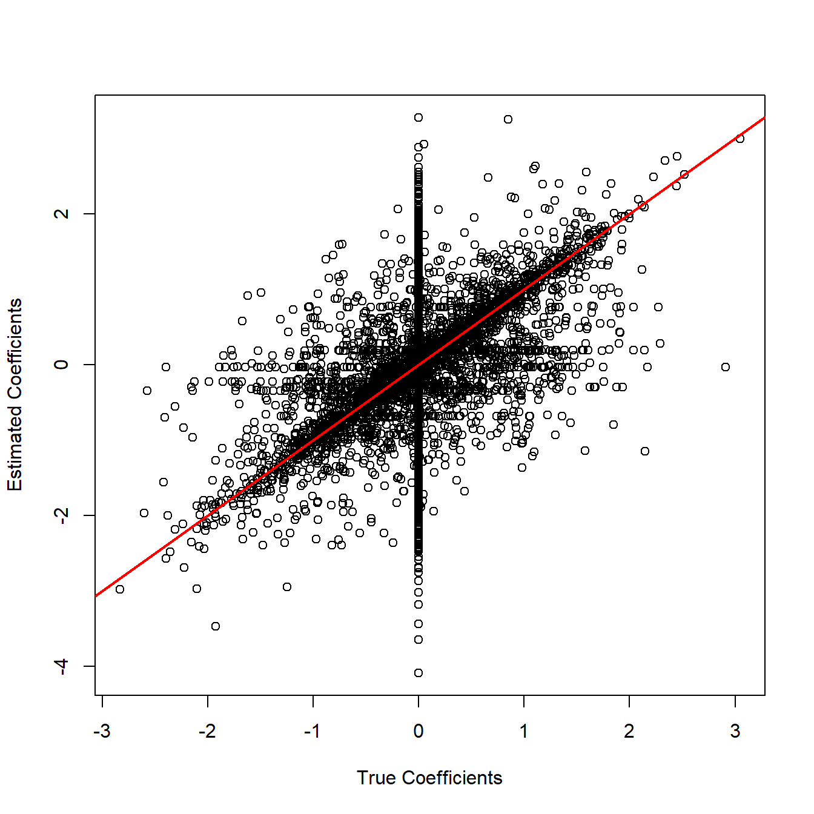
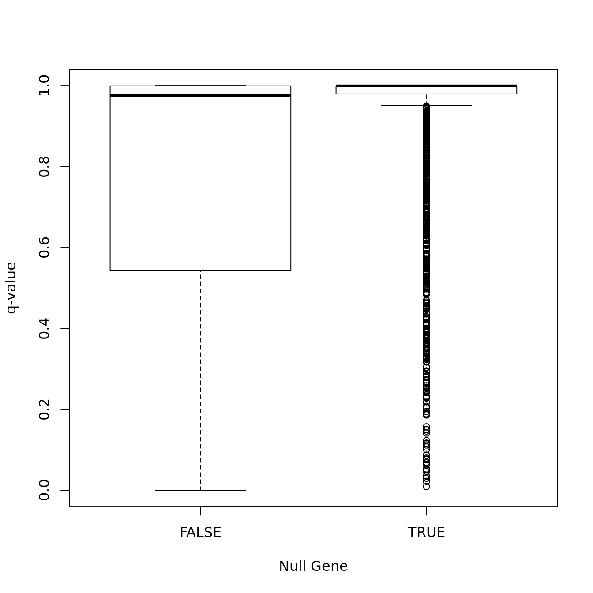
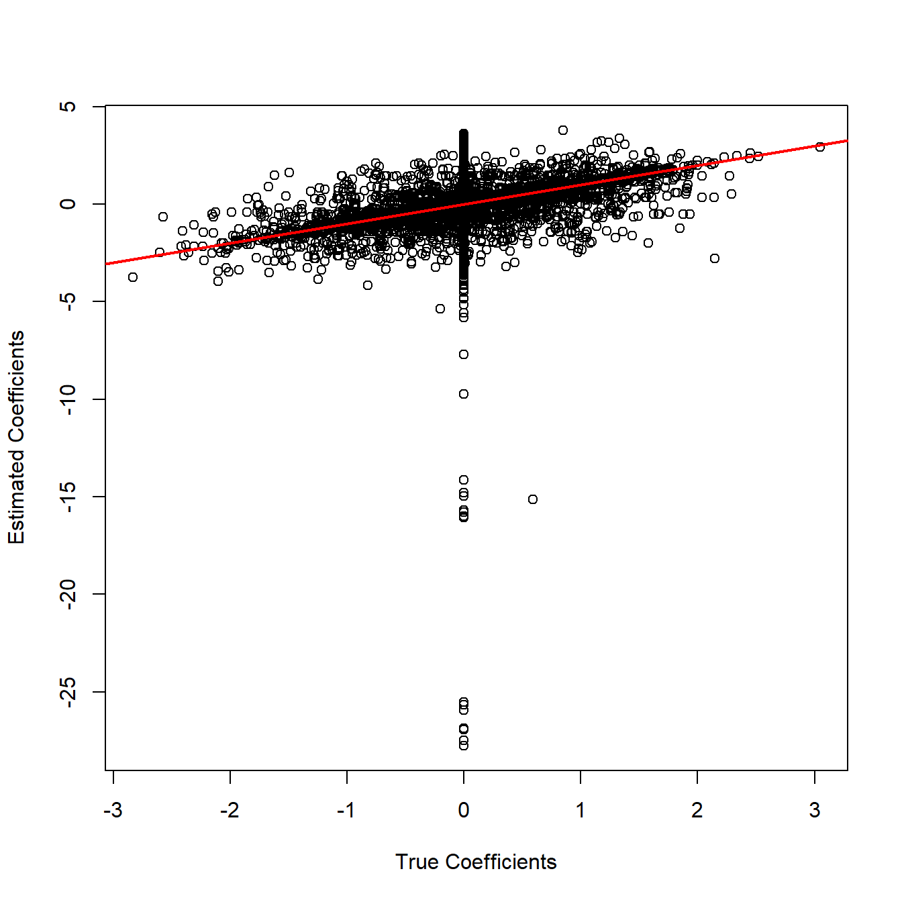
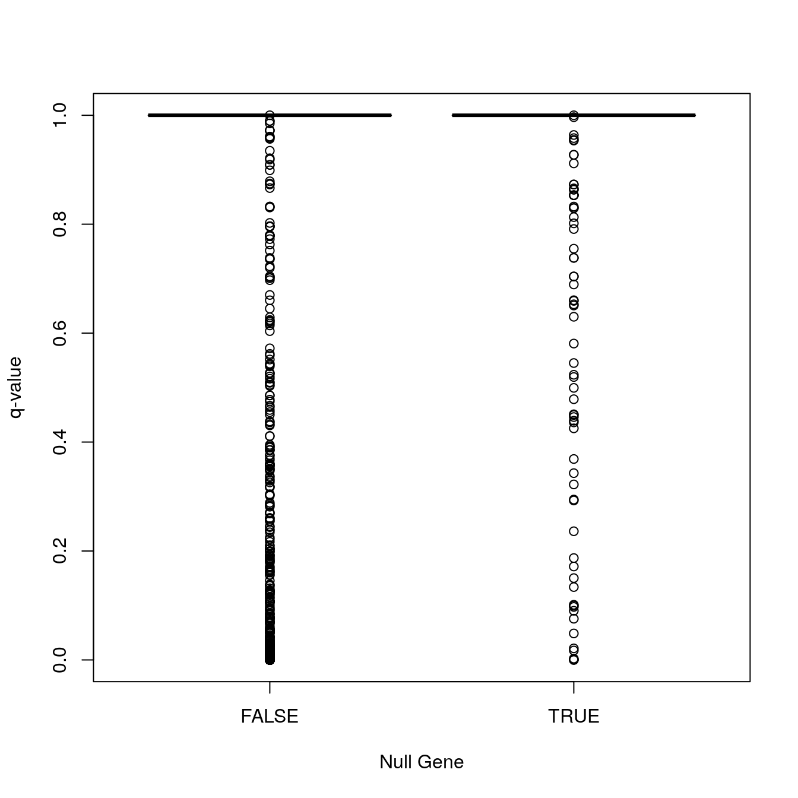
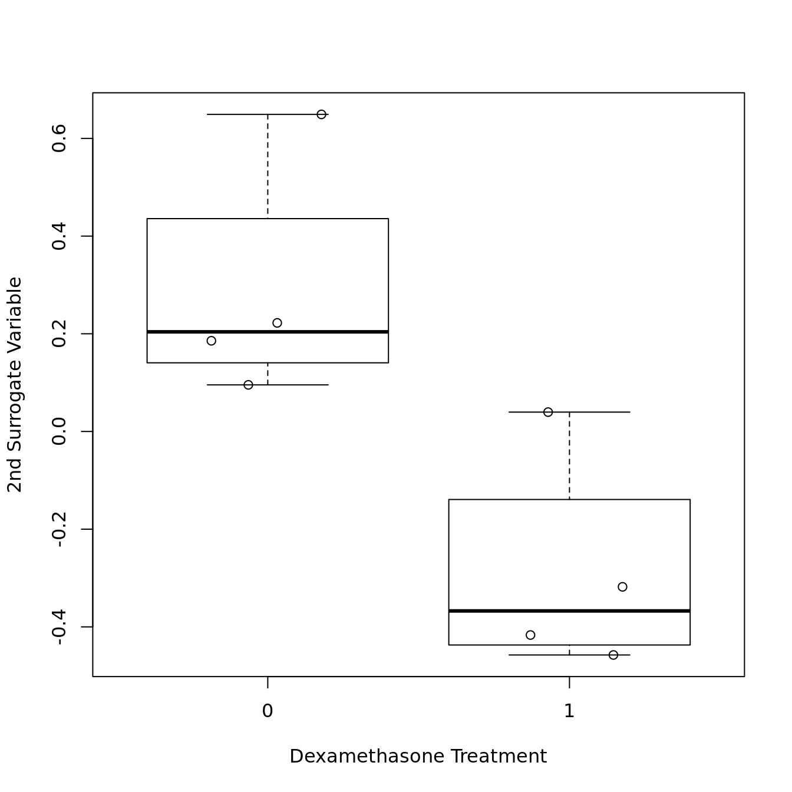

We demonstrate how one may use seqgendiff in differential expression simulation studies using the airway data from Himes et al (2014). We use seqgendiff to simulate one dataset which we then analyze with two pipelines: the sva-voom-limma-eBayes-qvalue pipeline, and the sva-DESeq2-qvalue pipeline. In practice, you would simulate many datasets and compare average performance. But playing with a single dataset can help you gain intuition with various methods.
The methods used here are described in Gerard (2019).
Set the seed for reproducibility:
set.seed(1)The airway data are available in the airway R package from Bioconductor. If you don’t have this package, you can install it with the BiocManager package:
install.packages("BiocManager")
BiocManager::install("airway")Now we can load these data into R.
You can read about these data here.
These are the other packages that we’ll need for this vignette:
library(seqgendiff)
library(SummarizedExperiment)
library(DESeq2)
library(limma)
library(sva)
library(qvalue)The last five packages are all from Bioconductor, which you need to install using BiocManager::install().
The airway dataset comes with a few observed variables which affect gene expression. We’ll consider these “surrogate variables”. That is, we’ll add signal to the data and try to account for these surrogate variables.
coldat <- colData(airway)[, c("cell", "dex")]
true_sv <- model.matrix(~cell + dex, data = coldat)[, -1]
true_sv
#> cellN061011 cellN080611 cellN61311 dexuntrt
#> SRR1039508 0 0 1 1
#> SRR1039509 0 0 1 0
#> SRR1039512 0 0 0 1
#> SRR1039513 0 0 0 0
#> SRR1039516 0 1 0 1
#> SRR1039517 0 1 0 0
#> SRR1039520 1 0 0 1
#> SRR1039521 1 0 0 0Suppose we want to add a treatment effect to the RNA-seq data. We’ll first remove all genes with no counts:
Then we’ll use the convenient thin_2group() function from the seqgendiff package to add a \(N(0, 0.8^2)\) log2-effect size to 10% of the genes:
thout <- thin_2group(mat = assay(airway),
prop_null = 0.9,
signal_fun = stats::rnorm,
signal_params = list(mean = 0, sd = 0.8))Let’s see how well the sva-voom-limma-ebayes-qvalue pipeline does estimating these effects. First, we’ll fit this pipeline.
X <- cbind(thout$design_obs, thout$designmat)
Y <- log2(thout$mat + 0.5)
n_sv <- num.sv(dat = Y, mod = X)
svout <- sva(dat = Y, mod = X, n.sv = n_sv)
#> Number of significant surrogate variables is: 2
#> Iteration (out of 5 ):1 2 3 4 5
vout <- voom(counts = thout$mat, design = cbind(X, svout$sv))
lout <- lmFit(vout)
eout <- eBayes(lout)
qout <- qvalue(p = eout$p.value[, 2])
bhat <- eout$coefficients[, 2]We plot the coefficient estimates against their true values.
plot(thout$coefmat,
bhat,
xlab = "True Coefficients",
ylab = "Estimated Coefficients")
abline(0, 1, col = 2, lwd = 2)
We plot the q-values against the null status of each gene.
is_null_gene <- abs(thout$coefmat) < 10^-6
boxplot(qout$qvalues ~ is_null_gene,
xlab = "Null Gene",
ylab = "q-value")
Does the sva-DESeq2 pipeline do any better? We’ll first use seqgendiff::ThinDataToDESeqDataSet() to convert the ThinData object thout into a DESeqDataSet object.
thout$design_obs <- cbind(thout$design_obs, svout$sv)
dds <- ThinDataToDESeqDataSet(obj = thout)
colData(dds)
#> DataFrame with 8 rows and 3 columns
#> V1 V2 P1
#> <numeric> <numeric> <numeric>
#> sample1 0.0581649583370674 -0.457510403830783 0
#> sample2 -0.271760290397098 0.0954250428718614 1
#> sample3 0.21841247957219 -0.318033149535916 0
#> sample4 -0.562532335842705 0.18569711917744 1
#> sample5 0.505745730821914 0.0396605601043368 1
#> sample6 0.423941698356991 0.649114179504396 0
#> sample7 -0.0217765588083237 -0.416661413411475 1
#> sample8 -0.350195682040018 0.222308065120137 0
design(dds)
#> ~V1 + V2 + P1
#> <environment: 0x7fee707ed890>Note that we added the estimated surrogate variables from sva to the ThinData object before converting to a DESeqDataSet object.
Now we will fit DESeq2.
dds <- DESeq(object = dds)
#> estimating size factors
#> estimating dispersions
#> gene-wise dispersion estimates
#> mean-dispersion relationship
#> final dispersion estimates
#> fitting model and testing
pval_dds <- rowData(dds)[, "WaldPvalue_P1"]
qval_dds <- qvalue(p = pval_dds)We plot the coefficient estimates against their true values.
coefmat <- rowData(dds)[, c("true_P1", "P1")]
plot(coefmat$true_P1,
coefmat$P1,
xlab = "True Coefficients",
ylab = "Estimated Coefficients")
abline(0, 1, col = 2, lwd = 2)
We also plot the q-values against the null status of each gene.
boxplot(qval_dds$qvalues ~ is_null_gene,
xlab = "Null Gene",
ylab = "q-value")
The MSE is worse for DESeq2.
mse_limma <- mean((bhat - thout$coefmat) ^ 2)
mse_deseq2 <- mean((coefmat$true_P1 - coefmat$P1) ^ 2, na.rm = TRUE)
mse_deseq2
#> [1] 0.5362889
mse_limma
#> [1] 0.235233The FDP is about the same for the two pipelines. Both are OK, but conservative.
mean(is_null_gene[qval_dds$qvalues < 0.1], na.rm = TRUE)
#> [1] 0.01812191
mean(is_null_gene[qout$qvalues < 0.1], na.rm = TRUE)
#> [1] 0.03339518DESeq2 has more discoveries
sum(qval_dds$qvalues < 0.1, na.rm = TRUE)
#> [1] 607
sum(qout$qvalues < 0.1, na.rm = TRUE)
#> [1] 539As a side-note, it seems that the second surrogate variable is getting at the dexamethasone variable.
boxplot(svout$sv[, 2] ~ true_sv[, 4],
xlab = "Dexamethasone Treatment",
ylab = "2nd Surrogate Variable")
points(jitter(true_sv[, 4] + 1), svout$sv[, 2])